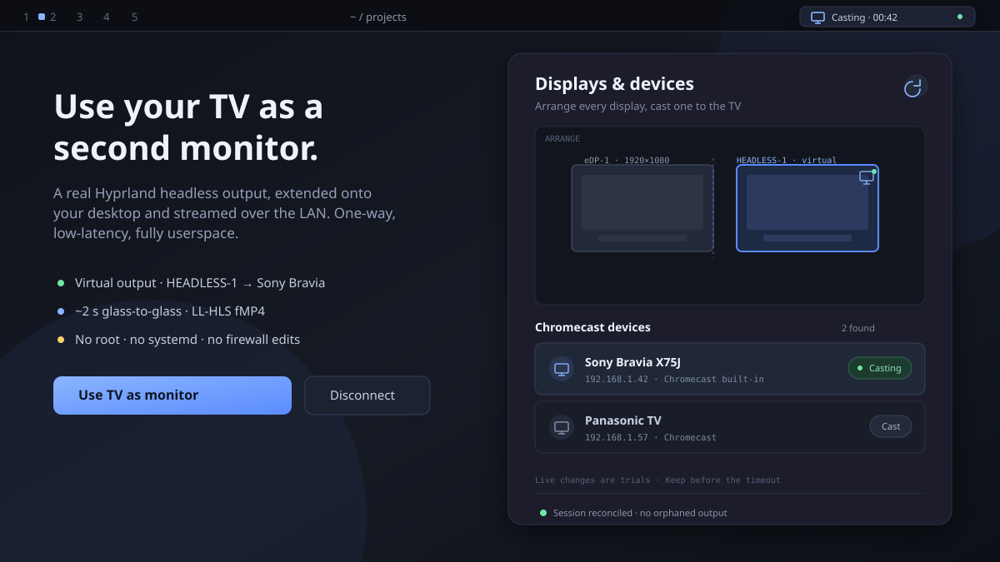

Use your TV as a second monitor.
Omascreencast creates a real Hyprland headless output, extends your desktop onto it, and streams that display to a Chromecast TV over the LAN. Arrange it like any other monitor — because that is exactly what it is.

Not a mirror. A display.
The TV becomes a genuine output you can place, resize, rotate, mirror, or disable.
Virtual network monitor
A HEADLESS-* output appears in Hyprland and is streamed to the TV. Move windows there and they stay there.
Arranger for every display
Drag to position, snap edges, set mode, scale, orientation, mirror, or disable — physical and virtual displays alike.
~2 s glass-to-glass
Hardware H.264/HEVC through VAAPI into an in-memory LL-HLS fMP4 stream. Tuned for latency, honest about its limits.
Userspace only
No root, no systemd unit, no firewall edits. Dependencies are system packages or a private venv in your home directory.
Recoverable by design
Trials auto-revert, layouts that would hide every display are refused, and crashes are reconciled on the next shell start.
Fits the shell
A bar widget with idle / discovering / connecting / casting / error states, desktop notifications, and an IPC surface.
Install in one command
Requires Omarchy Quattro (Hyprland + Quickshell) on Arch.
Add the plugin
Clone, validate, and enable through the standard Omarchy flow.
omarchy plugin add https://github.com/brrrassica/omascreencast --enable
Check dependencies
Open the panel → Doctor. If Python packages are missing, Set up provisions a private venv — no root.
# optional, faster path (needs root once):
sudo pacman -S python-pychromecast python-zeroconf wf-recorder ffmpeg
Open one port, then cast
The TV must fetch the stream from your machine. doctor shows the exact rule; nothing changes automatically.
sudo ufw allow 7236/tcp
# then: panel → pick your TV → “Use TV as monitor”
Arrange and keep
Drag the virtual display next to a physical one so the cursor can reach it. Press Keep before the trial timeout, or it reverts.
Honest limitations
Stated up front, because they are physical properties of the Cast protocol.
What it is good for
- Dashboards, terminals, logs, and monitoring
- Video, slides, and reference material
- Overflow space when your laptop screen is full
What it is not
- One-way sink: input from the TV is impossible
- ~2 s latency: not for competitive gaming
- No EDID or hotplug: choose mode and scale yourself
- No audio in v0.1.0 (lands in v0.1.x)
- Chromecast only; Miracast/WFD and DLNA are out of scope